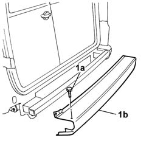
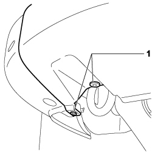
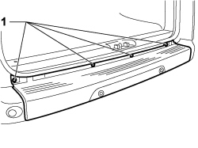
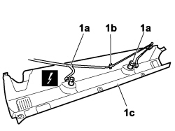

7210E67 rear bumper - central element
- Path
- Procedures > 72 PANELS AND FRAMES > 7210 REMOVING-REFITTING > 7210E external parts > 7210E67 rear bumper - central element
- Kind
- repair procedure (removal / refitting; the operation number is the code)
- Applies to
- all engines; all production periods
- Interactive page
- https://sloeber94.github.io/elrnDB-fDbl/en/#/2585268
Applies to: engines: 1.2 8v, 1.6 16v, 1.3 JTD 16V, 1.9 JTD 8V, 1.9 DIESEL; all production periods
 Removing
Removing
 Refitting
Refitting1. Undo the bolts (1a) and remove the bumper (1b)

Applies to: engines: 1.2 8v, 1.6 16v, 1.3 JTD 16V, 1.9 JTD 8V, 1.9 DIESEL; all production periods
Refitting
RemovingCheck that the bumper is undamaged.
Touch up the paintwork if necessary.
Fit the bumper and secure it using the bolts.
Applies to: engines: 1.4 8v, 1.6 16v, 1.3 JTD 16V, 1.9 JTD 8V; production: da 12/03; only with equipment: MY 2005
Removing
RefittingPosition the vehicle on a lift.
Turn the ignition key to the OFF position.
Lift the bonnet
Disconnect the negative battery terminal.
Description | Connector | |
|---|---|---|
- | BATTERY |
1. Unscrew the bolts in the lower part of the bumper from both sides.

Applies to: engines: 1.4 8v, 1.6 16v, 1.3 JTD 16V, 1.9 JTD 8V; production: da 12/03; only with equipment: MY 2005
1. Undo the bolts in the upper part of the bumper.

Applies to: engines: 1.4 8v, 1.6 16v, 1.3 JTD 16V, 1.9 JTD 8V; production: da 12/03; only with equipment: MY 2005
1. Disconnect electrical connections (1a) from the parking obstacle detection sensors, release the wiring from retaining collar (1b) and remove bumper (1c).
Description | Connector | |
|---|---|---|
1a | PARKING SENSOR UNIT |
Description | Connector | |
|---|---|---|
1a | PARKING SENSOR UNIT |

Applies to: engines: 1.4 8v, 1.6 16v, 1.3 JTD 16V, 1.9 JTD 8V; production: da 12/03; only with equipment: MY 2005
Applies to: engines: 1.4 8v, 1.6 16v, 1.3 JTD 16V, 1.9 JTD 8V; production: da 12/03; only with equipment: MY 2005
Refitting
RemovingCheck that the bumper is not damaged.
If necessary, retouch the paintwork.
Connect the electrical connections to the parking obstacle detection sensors.
Description | Connector | |
|---|---|---|
- | PARKING SENSOR UNIT |
Description | Connector | |
|---|---|---|
- | PARKING SENSOR UNIT |
Secure the parking sensor system wiring to the retaining collar.
Position the bumper in its seat and secure with the bolts.
Connect the negative battery terminal.
Description | Connector | |
|---|---|---|
- | BATTERY |